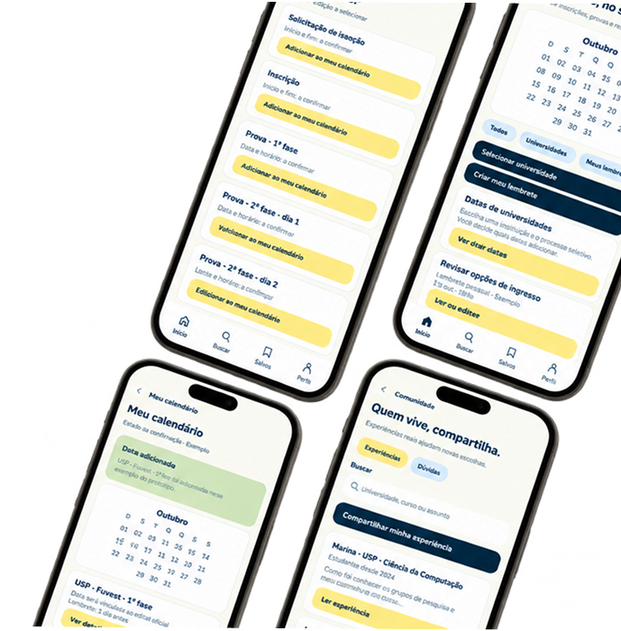
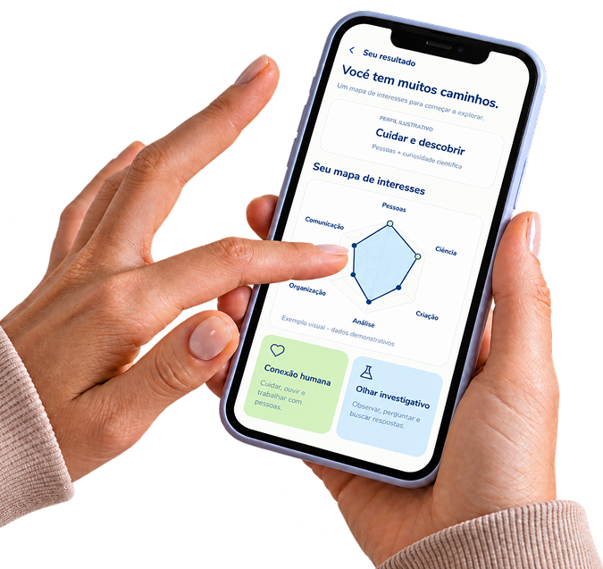

Tudo o que você
precisa para
descobrir novos
caminhos.
Ferramentas para pesquisar, comparar, refletir e planejar sua trajetória rumo ao ensino superior público.
Conheça nossos recursos
Nunca perca
um prazo.
Inscrições, provas e etapas importantes merecem estar no seu radar. Com o calendário do Tô Dentro!, você consulta datas relevantes e se organiza para aproveitar cada oportunidade.
Planeje hoje os caminhos que quer trilhar amanhã.


Seu futuro começa com
uma descoberta.
Descubra seus interesses, reconheça suas afinidades e explore cursos que combinam com você. Um primeiro passo para escolher com mais confiança.
Não existe um único jeito de ser você.
O teste ajuda a visualizar interesses e descobrir caminhos para explorar — sem limitar suas escolhas.
De curiosidades a possibilidades.
Você responde. O Tô Dentro! ajuda a enxergar novos caminhos.
Sem respostas certas ou erradas. O caminho é seu.
Descubra o que te move.
Uma escolha. Muitos lugares para chegar.
Conheça diferentes instituições e descubra o que faz sentido para o seu futuro.